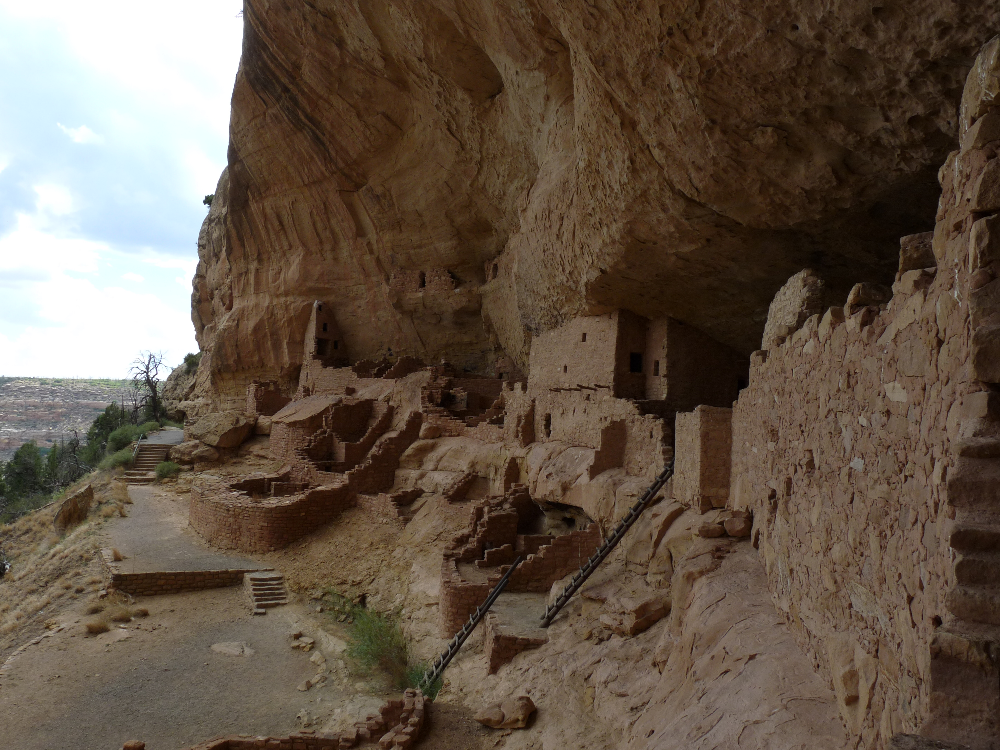
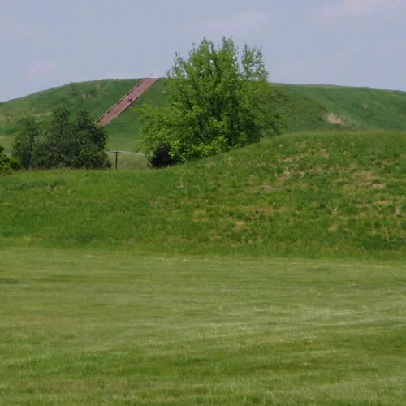

Read a short illustrated account, examine primary sources, and discuss the evidence.
Before 1492 · Thousands of years of history
America before 1492: many peoples, many worlds
American history did not begin with Columbus. For thousands of years before 1492, Indigenous peoples lived throughout North, Central, and South America. They developed distinct languages, governments, spiritual traditions, technologies, and ways of caring for land and water. The United States did not yet exist, and its present-day borders do not describe these earlier homelands.
Builders, farmers, traders, and knowledge keepers
People adapted to diverse environments, from Arctic coasts to river valleys and southwestern deserts. Some communities moved seasonally; others built enduring villages and cities. Farming, fishing, hunting, and gathering often worked together. Trade carried materials and ideas across long distances.
We learn from archaeology, oral histories, and knowledge held by descendant communities. These sources answer different questions and should be studied together. Indigenous nations are living communities today, not people who disappeared when Europeans arrived.
Look closely: What does the masonry at Long House suggest about planning, materials, and cooperation? What could a photograph alone never tell us about the people who lived there?

Long House at Mesa Verde preserves an Ancestral Pueblo village. Most cliff dwellings in this region were built about 1180–1300 CE, centuries before Columbus’s voyage. This modern photograph records surviving architecture; it does not show the village as it looked when inhabited.
National Park Service · Public domain, U.S. government work · Source · Rights

Cahokia’s surviving earthworks This modern NPS photograph shows a surviving mound at Cahokia, an Indigenous urban center that flourished centuries before 1492. Earthworks required planning and coordinated labor. What traces of a city can remain after its wooden buildings are gone?National Park Service · Modern photograph · Public domain, U.S. government work · Source & rights
Cahokia and the Mississippi Valley
Near present-day St. Louis, Cahokia grew into a major Indigenous city after about 1050 CE. Its earthen mounds and public spaces show large-scale construction and community organization. It was part of a wider world of farming settlements and exchange.
In the Southwest, communities developed farming, masonry buildings, and knowledge suited to a demanding environment. People moved and communities changed over time. Their history continues through descendant Pueblo peoples and their relationships with ancestral places.
Native mariners traveled Caribbean waters long before Spanish ships arrived. Taíno communities cultivated crops and built networks among islands. Elsewhere in the Americas, Maya societies and the Mexica and Inka empires had their own political and intellectual traditions. No single example represents every Indigenous society.